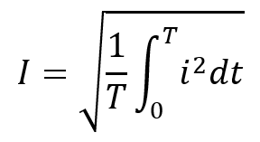
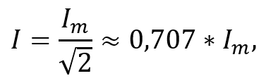
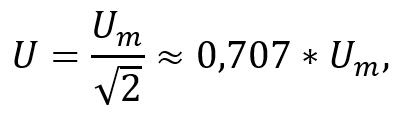

Постійний і змінний струм мають спільну природу – в обох випадках це впорядкований рух електронів. Проте діють вони по-різному, і результат їхньої роботи може відрізнятися.
Для наочності розглянемо простий приклад: уявімо звичайну лампочку потужністю, наприклад, 60 Вт. Незалежно від того, живиться вона постійним чи змінним струмом, яскравість її світіння визначається кількістю енергії, що передається їй за одиницю часу (в нашому випадку – 60 Дж/с).
Якщо лампочка живиться постійним струмом, усе зрозуміло: струм тече весь час в одному напрямку зі сталою силою. Змінний же струм постійно змінює свою величину та напрямок протікання. Однак, він може бути еквівалентним постійному, і лампочка буде світити з тією ж яскравістю. Таке еквівалентне значення змінного струму називають його діючим значенням.
Діюче (ефективне) значення змінного струму – значення такого постійного струму, що за час, рівний періоду змінного струму T, виконає ту саму роботу або виділить ту саму кількість тепла, що і даний змінний струм.
Частіше використовується інша назва цієї величини – середньоквадратичне значення змінного струму, або абревіатура RMS (з англ. Root Mean Square).
Діюче значення змінного струму обчислюється за формулою:

Однак для гармонічних коливань (синусоїди), використовується спрощена формула:

де Im – амплітудне значення змінного струму.
Для напруги змінного струму вираз аналогічний:

де Um – амплітудне значення напруги.
Отже, діюче значення дає змогу чисельно охарактеризувати змінний струм за його здатністю виконувати роботу або виділяти тепло.